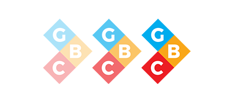

Overview
This project is a multi-national EEG normative initiative for creating international standards for MEEG analysis, under the focus of the Global Brain Consortium (GBC). The initiative is led by Dr. Pedro Valdes-Sosa, at the University of Electronic Science and Technology of China (UESTC) and it joins several scientists all around the world.
Background
The pilot phase of the project started in March 2021. This initial proof of concept aims to calculate populational normative descriptors at the scalp level and with a reduced set of 19 electrodes of the international 1020 system.
Resting state (eyes closed) EEG data from 1586 healthy subjects have been collected from 15 research groups, located in 9 countries across the Americas, Europe, and Asia.
Data Cohorts
- Barbados
- China
- Colombia
- Cuba
- Germany
- Malaysia
- Russia
- Switzerland
- USA
Goals

- Create “qEEG signature” descriptors of the EEG spectra maturation, in a wide range of age and a narrow frequency range, for large populations, which take into consideration different ethnicity, culture, sex and other socio-economical indices.
- Developing methodologies for data harmonization across cohorts
Creating Signatures to describe EEG activity
- Validating and standardizing EEG preprocessing toolboxes for clean-EEG selection (e.g., artifact rejection).
- Data harmonization for conjoint use of EEG recordings gathered with different devices, technical conditions, and countries.
- Creating Quality Control mechanisms for accessing data quality and validity, as well as automatic preprocessing algorithms performance.
- Development of methods for automatic detection of outliers, to assess signal quality.
- Multivariate measurements for the comparison of different EEG cohorts.
Data Standardization and Quality Control
- Metrics for assessing deviations from normality.
- Multivariate methodologies to calculate normative regressions for MEEG data, and to create normative surfaces, rather than single variable norms.
- Methods for estimating the spectra at the MEEG sources, more appropriate for connectivity analysis.
- Calculation of normative parameters both at the scalp and the sources, in the whole frequency range, for different inverse estimators.
Novel normative methodologies